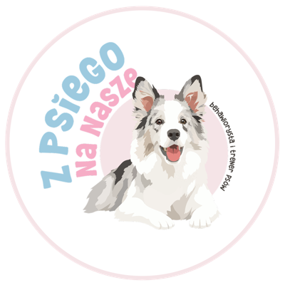
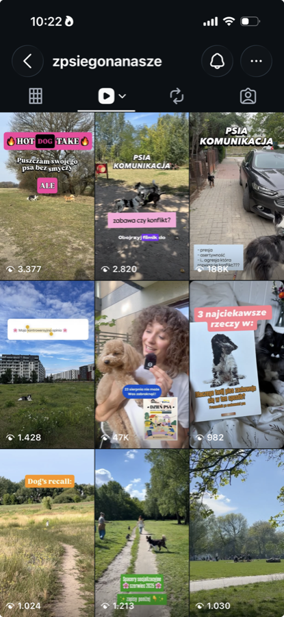
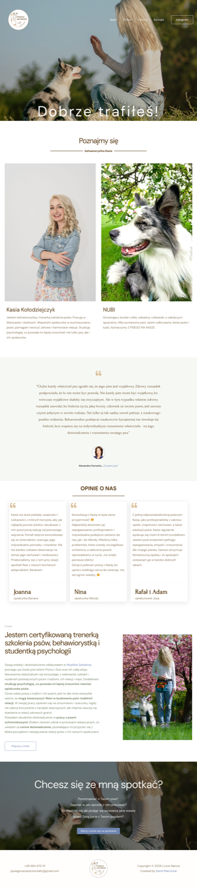
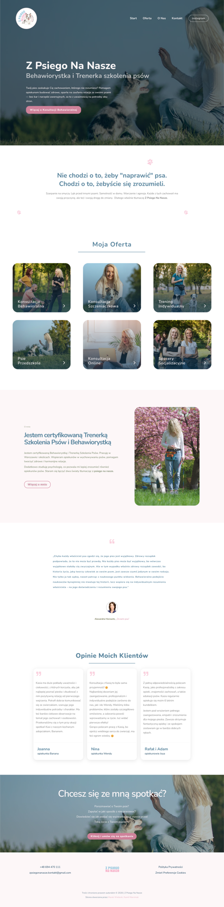
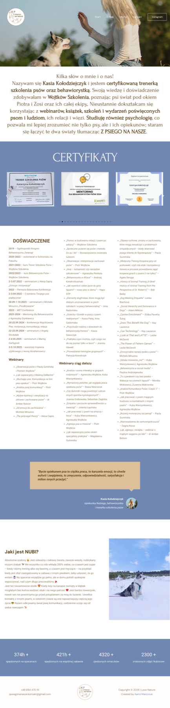
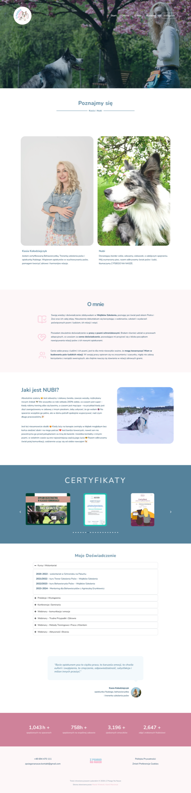
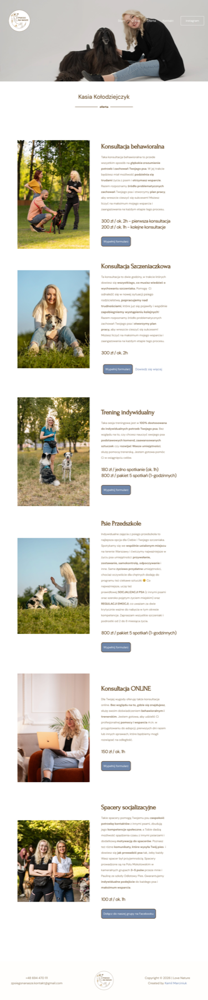
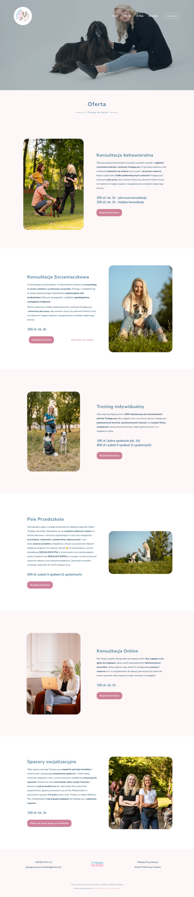
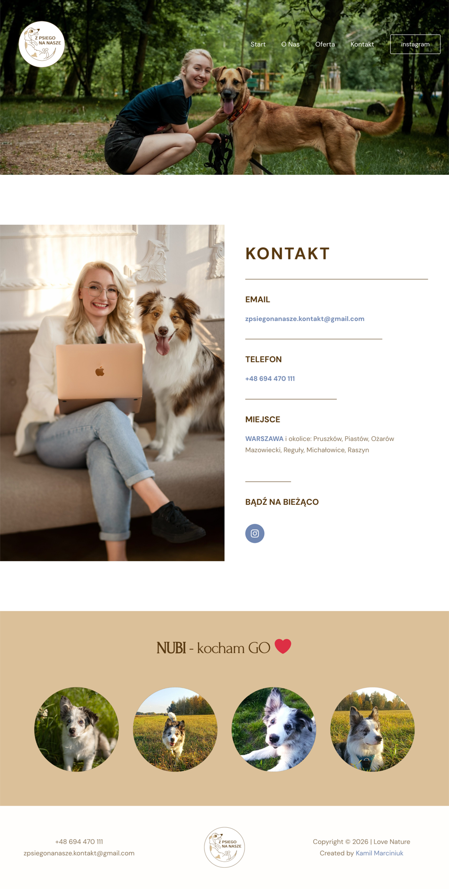
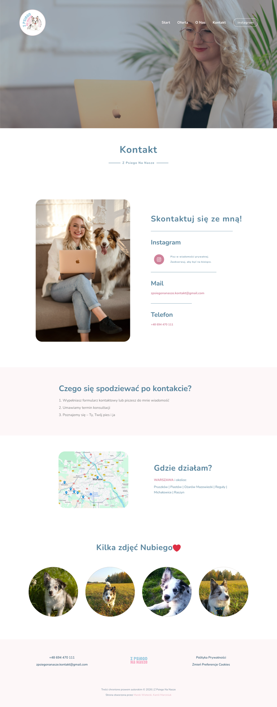

Strona Internetowa
Kompleksowy redesign i optymalizacja strony internetowej marki Z Psiego Na Nasze — behawiorystki i trenerki szkolenia psów. Zakres objął migrację hostingu, redukcję kosztów utrzymania, przebudowę UX strony głównej i podstron, znaczącą poprawę wydajności oraz wsparcie strategii marketingowej w social media.
Rola: CX & Product Designer
Zakres odpowiedzialności: Redesign UX/UI, Optymalizacja wydajności, Migracja hostingu, Strategia treści i social media, Zgodność RODO
Czas trwania: W trakcie (od sierpnia 2026)
Metodyka: Iteracyjne wdrożenia oparte na danych (Lighthouse, analityka Instagram)

Strona InternetowaKontekst i Problem
Do współpracy dołączyłem, gdy strona działała na niepotrzebnie drogim hostingu, a jej treść była chaotyczna — na stronie głównej informacje o behawiorystce pojawiały się w dwóch różnych, mało spójnych miejscach, a doświadczenie zawodowe było wypisane jako jedna gęsta, nieuporządkowana lista bez podziału na kategorie.
Do tego doszedł problem techniczny — audyt w Lighthouse wykazał wynik wydajności zaledwie 42/100 , co realnie wydłużało czas ładowania strony i mogło zniechęcać odwiedzających jeszcze przed poznaniem oferty.
Cele
🎯 Obniżenie kosztów utrzymania strony – bez utraty jakości i dostępności strony dla klientów.
🎯 Uporządkowanie treści i eliminacja duplikatów – jedna spójna opowieść o marce zamiast rozproszonych, powtarzających się fragmentów.
🎯 Realna poprawa wydajności strony – szybsze ładowanie, lżejsze zasoby, zgodność z dobrymi praktykami.
🎯 Wsparcie rozwoju marki w social media – strona i komunikacja w social media mają się wzajemnie wzmacniać.
Iteracje
Migracja strony na tańszy hosting
Pracę zacząłem od migracji istniejącej strony WordPress na nowe, znacznie tańsze środowisko hostingowe — bez utraty ciągłości działania strony ani adresu domeny. To otworzyło drogę do kolejnego kroku — realnej redukcji kosztów.
Redukcja kosztów — 3-krotnie niższy hosting
Po migracji dobrałem plan hostingowy dopasowany do realnych potrzeb strony, zamiast przewymiarowanego pakietu. Efektem było 3-krotne zmniejszenie rocznego kosztu utrzymania strony . Budżet, który wcześniej starczał na rok hostingu i domeny, teraz pokrywa 3 lata utrzymania strony (Hosting Runway).
Landing page „Konsultacja Szczeniaczkowa”
Zaprojektowałem i wdrożyłem dedykowaną stronę docelową dla najczęściej wybieranej usługi — konsultacji szczeniaczkowej — skracając drogę od pierwszego wejścia na stronę do zapisania się na spotkanie.
Zrzut ekranu landing page dołączę tutaj po ukończeniu materiałów.
Strategia w social media — pierwszy viral
Równolegle doradzałem mocniejsze wejście w Instagram i cały ekosystem Meta — a przede wszystkim przełamanie się co do tworzenia „rolek” i mówienia wprost do telefonu zamiast wyłącznie cichych materiałów.
Efekt przyszedł szybciej niż zakładaliśmy — trzecia mówiona, ekspercka rolka osiągnęła ponad 188 tys. wyświetleń , podczas gdy nieme materiały wcześniej osiągały maksymalnie ok. 1200 wyświetleń. Oprócz zasięgu, rolka przyniosła ponad 600 nowych obserwujących — podwajając ich liczbę i otwierając kolejne możliwości przekuwania zaangażowanych odbiorców w klientów marki.
{kind=link}

Redesign strony głównej — koniec duplikacji treści
Na stronie głównej były dwa osobne miejsca „o mnie” , a żadne z nich samo w sobie nie było wystarczające — link „dowiedz się więcej” prowadził do podstrony, na której nie było nic nowego. Zostawiłem na stronie głównej jedną, estetyczną sekcję „o mnie”, a resztę treści o Kasi i Nubim przeniosłem na podstronę „O Nas”.
Stworzyłem też nowe Hero od zera i dodałem na stronie głównej zarys oferty, tak aby kluczowe usługi były widoczne już przy pierwszym kontakcie ze stroną, zamiast być ukryte na osobnej podstronie.
Na stronę główną przeniosłem też opinie zadowolonych klientów, tak aby budować zaufanie do marki jeszcze zanim odwiedzający przejdzie do pełnej oferty.
{kind=link}

{kind=link}

Redesign podstrony „O Nas”
Doświadczenie zawodowe Kasi było wcześniej wypisane jako jedna gęsta, nieuporządkowana lista. Podzieliłem je na kategorie (kursy i wolontariat, prelekcje i wystąpienia, konferencje, webinary) i zamknąłem w rozwijanym akordeonie , dzięki czemu strona jest czytelna od razu, a szczegóły są o jedno kliknięcie dalej.
Przy okazji zaktualizowałem też licznik osiągnięć na dole strony (godziny spacerów, wykonane zdjęcia Nubiemu i inne) o aktualne liczby.
{kind=link}

{kind=link}

Redesign Oferty
Przebudowałem układ podstrony z ofertą, tak aby każda usługa — konsultacja behawioralna, konsultacja szczeniaczkowa, trening indywidualny, psie przedszkole, konsultacja online i spacery socjalizacyjne — była prezentowana w spójnym, przejrzystym formacie zgodnym z nową identyfikacją wizualną strony.
{kind=link}

{kind=link}

Redesign podstrony Kontakt, nowa stopka i sticky header
Uporządkowałem stopkę, dodając link do polityki prywatności i edycji preferencji cookies , których wcześniej tam nie było. Górne menu nawigacyjne zrobiłem sticky , tak aby najpotrzebniejsza nawigacja była zawsze pod ręką użytkownika, niezależnie od miejsca przewijania strony.
Dodałem też headerowi płynną animację przejścia — przy przewijaniu strony w dół nawigacja płynnie zmienia się z przezroczystego, ciemnego wariantu na jasne tło z dobrze kontrastującymi linkami, zamiast twardo przeskakiwać między stanami.
Samą podstronę Kontakt przeprojektowałem od podstaw — czytelne karty z Instagramem, mailem i telefonem zamiast jednego bloku tekstu, a do tego krótką listę „Czego się spodziewać po kontakcie” — trzy proste kroki, które obniżają niepewność przed pierwszym kontaktem . Dodałem też mapkę z obszarem działania (Warszawa i okolice) oraz lekką, uśmiechniętą galerię zdjęć Nubiego, żeby strona kontaktu nie była wyłącznie formalna.
{kind=link}

{kind=link}

Nowy branding — logo i kolorystyka
Zmieniłem logo na wersję z okrągłą ikoną na górze i tekstem pod spodem, zaktualizowałem kolorystykę w style guide strony, a także poprawiłem tytuły podstron (meta title), aby lepiej opisywały ich zawartość zarówno użytkownikom, jak i wyszukiwarkom.
Optymalizacja wydajności — Lighthouse
Po wdrożeniu redesignu przetestowałem stronę w Google Lighthouse i w ciągu jednego dnia pracy nad hostingiem współdzielonym poprawiłem wszystkie kluczowe metryki wydajności.
Za tymi liczbami stoją konkretne decyzje:
🗜️ Kompresja zdjęć — zdjęcie Alexandry Horowitz spadło z 344 KB do 46 KB dzięki kompresji i responsywnym rozmiarom.
⏱️ Odłożenie Google Ads (gtag.js) — skrypt przestał ładować się bezwarunkowo na starcie, a zaczął ładować się dopiero po zgodzie użytkownika, zdjęty z krytycznej ścieżki renderowania.
🧹 Odchudzenie WordPressa — 6 usuniętych lub skonsolidowanych wtyczek (dublujące cache, sitemapy, analitykę i zbędny plugin startowy).
Best Practices poprawiło się z 77 do 96/100, a SEO pozostało na maksymalnym poziomie 100/100.
Zgodność z RODO i dostępność
Oprócz samych liczb z Lighthouse zadbałem o pełną zgodność cookies z RODO — realne blokowanie Google Analytics i Ads do momentu wyrażenia zgody oraz aktualną politykę prywatności — a także o poprawki dostępności: opisy alternatywne przy linkach i lepszy kontrast menu.
W budowie: Brand Book
Równolegle tworzę pełny brand book marki. Prace czekają obecnie na finalne czcionki od graficzki, po otrzymaniu których dokument zostanie dokończony.
Efekt Końcowy
✅ Zredukowałem roczny koszt utrzymania strony 3-krotnie — budżet starczający wcześniej na rok teraz starcza na 3 lata hostingu i domeny.
✅ Podniosłem wynik Performance w Google Lighthouse z 42 do 78/100 (+36 punktów), przy ~5-krotnie szybszym Speed Index i o 24% lżejszej stronie.
✅ Uporządkowałem treść strony głównej i podstrony „O Nas”, eliminując zduplikowane sekcje „o mnie” i chaotyczną listę doświadczenia.
✅ Wsparłem strategię social media, która przyniosła pierwszy viral — ponad 188 tys. wyświetleń i +600 nowych obserwujących (2× wzrost).
✅ Zapewniłem pełną zgodność cookies z RODO oraz poprawki dostępności, budując większe zaufanie i bezpieczeństwo użytkowników.
Stronę w pełnym wymiarze można zobaczyć pod linkiem zpsiegonanasze.com.
Po Projekcie
Następne Kroki
3️⃣ Dokończenie Brand Booka – po otrzymaniu finalnych czcionek od graficzki dopracuję kompletny dokument identyfikacji wizualnej marki.
3️⃣ Landing page dla kolejnych usług – dedykowane strony docelowe dla pozostałych usług z oferty, na wzór strony konsultacji szczeniaczkowej.
3️⃣ Dalsza optymalizacja treści pod lokalne SEO – rozszerzenie widoczności strony w wyszukiwarce dla Warszawy i okolic.
3️⃣ Odchudzenie opisów na podstronie Oferty – skrócenie opisów usług do krótkich „teaserów”, tak aby strona zachęcała do kontaktu zamiast odpowiadać na wszystko od razu.